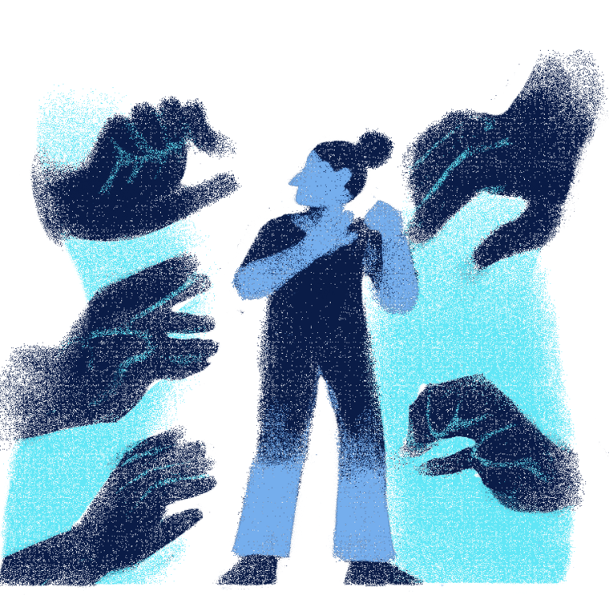
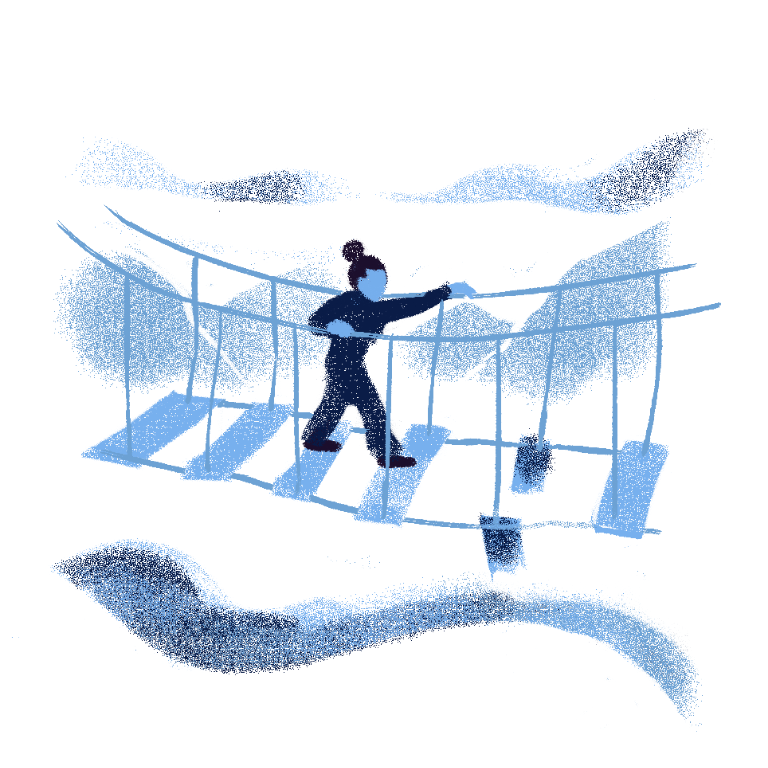

PRESSURE
Have you ever felt like everyone's eyes are on you, or do you feel that every movement you take seems to be enforced upon you? The feeling of countless expectations or fear of making mistakes often starts to influence a person when they know that there would be a consequence to even a single error they make.
Sometimes pressure doesn't just affect how we act, but also it can prevent us from doing something that does not even have a major consequence. For example, an anti-social person struggling to send as simple as a message to a person they met or declining a friend request so that you can focus on your academic responsibilities.
Not all pressure is bad. Usually it points us in the right direction, as long as there is a balance between actually guiding the person so that they can learn and teaching them the right thing. Once pressure starts to overcomplicate scenarios for a person, such as forcing them to either do tasks or reject other opportunities, a person might have lost their free will by that point. Understanding that pressure shouldn't hold on to one's decisions but guide them to a morally right scenario is the key. It is also important to learn to identify when to break free from the pressure when you know such pressure doesn't come from an ethically right source.
The Two Sides of Pressure
Pressure can be defined as either an internal or external force that can influence our actions and behavior. Most of the time, people who feel pressure carry trust and expectations, and upon submitting effort to the pressure, they can sometimes feel rewarded. Not all pressure is bad; some sharpens our will, teaches us to adapt to situations, and challenges our mind in hopes of gaining new insights.
If you know you can, earn skills and opportunities within the pressure, practice adapting amidst the chaos, work your way through the problem, and challenge yourself to become a greater version of yourself. But if you realize that the pressure due to numerous challenges and hindrances is starting to clutter your mind, push or urge yourself to do things you shouldn't, start to stress you out, and affect your mental health, take a step back and take care of yourself first, and find a workaround that won't break your will and heart.
Some examples of internal psychological factors for pressure:
- Perfectionism
- Self-imposed expectations
- Motivation & discipline
- Beliefs
- Self-talks
- Emotions
Some examples of external factors for pressure:
- Environment
- Peer Pressure
- Family
- Financial causes
- Other responsibilities
Find the Balance and Adapt
Effort and strength are key to a person's growth. Remember to always recognize it in adapting to life's challenges as they don't exist to kill you, but to showcase your true potential and to give you a reason to rise up.
If you know you can earn skills and opportunities within the pressure, practice adapting and work your way through the problem the challenge yourself to become a greater version of yourself. If you know pressure is starting to poison your mind, urges you to do bad things, or starts to stress you out, affecting your mental health, take a step back and take care of yourself first, find a workaround that won't break your will and heart.

Don't fear expectations will break you, only when you start to lose yourself.

Challenges are apparent in a journey. Stay strong!
Some opportunities exist to bring you a brighter tomorrow.